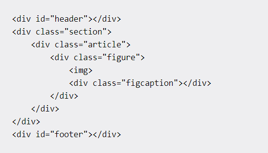
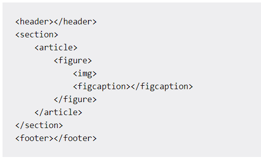

Semantics in HTML - Let's understand
Like many before me, I used to put tags in places where they had no business being. That's before I knew about the Semantic meaning that some tags held.

"A semantic element is an element of code that uses words to clearly represent what that element contains, in human language."
As stated above, semantic elements do not represent a feature, only an indication about what the non-semantic tags inside them hope to achive. For example, the header tag(<header>) does not hold a heading in itself but holds an indication that there are elements inside it that make up the heading of given website.
Unlike a 'div' tag, semantic elements actually serve the purpose of telling the browser and user, the content of the tags they house. While using a div tag makes no difference in the functioning of a website, the browser would have a hard time figuring out its content, resulting in poor ranking. It is also easier to maintain and read a document that follows proper semantics as opposed to one that dosen't.
Here are a few semantic tags that I don't think require explaination.
- <header>
- <main>
- <footer>
I'll try my best to explain in brief the purpose of following semantic tags.
<aside>: This tag houses content that is besides the topic/content displayed in the site.
<mark>: Holds text that is highlighted or marked to stress importance.
<nav>: Houses links that are used to navigate between different pages within the website or different websites altogether.
<figure>: Like the name suggests, they contain diagrams or figures or illustrations or photos etc.
<figcaption>: They are placed either as the first or last child of a <figure> tag. They contain captions for declared figure element.
<time>: When displaying any time or date information, this tag is invoked.
<section>: Used when dividing the document into groups of generic sections.
<article>: It is used to define content that has an independent body, featuring a specific topic.
The below images might shed better light. The first image shows an HTML doc with 'div' tags used extensively, while the second image depicts an HTML doc sporting a clean and systematic code.
 The difference I'm sure, is apparent. While this all seems to make sense, what if one were to declare a semantic element and then put tags that have nothing to do with it, inside the element? Well, the site would still function, but the developer would be deemed 'irresponsible'.
See, when a website is hosted on the internet, it is accessed by the population in its entirety. And using the right semantic ensures the content is delivered in a proper manner to people with disabilities like the rest of the population. So the developer bears a moral responsibility that transcends his paycheck, one which he must always adhere to.
It is therefore a good practice to write semantically correct code from early on, something I didn't do.